Semua siswa berada dalam program Pemasaran dan mempelajari dasar pemasaran serta bisnis.
Pendidikan bisnis · Balikpapan
JURUSAN PEMASARAN
JURUSAN PEMASARAN SMK NEGERI 2 BALIKPAPAN
Membangun Kompetensi, Mengembangkan Kreativitas, dan Menciptakan Peluang di Dunia Bisnis.
Gulir untuk menjelajahi
Ruang belajar untuk memahami pasar, melayani pelanggan, dan membangun bisnis di dunia yang terus berubah.
Kenali jurusan kamiProfil jurusan
Belajar bisnis lewat pengalaman nyata.
Jurusan Pemasaran SMK Negeri 2 Balikpapan membekali peserta didik dengan pengetahuan dan keterampilan dalam bidang pemasaran, perdagangan, serta pengelolaan bisnis.
Pembelajaran dirancang untuk mempersiapkan siswa menghadapi perkembangan dunia usaha dan dunia industri. Siswa belajar melalui teori dan praktik: dari memahami kebutuhan konsumen, strategi promosi, komunikasi bisnis, sampai pemasaran digital dan pengembangan usaha.
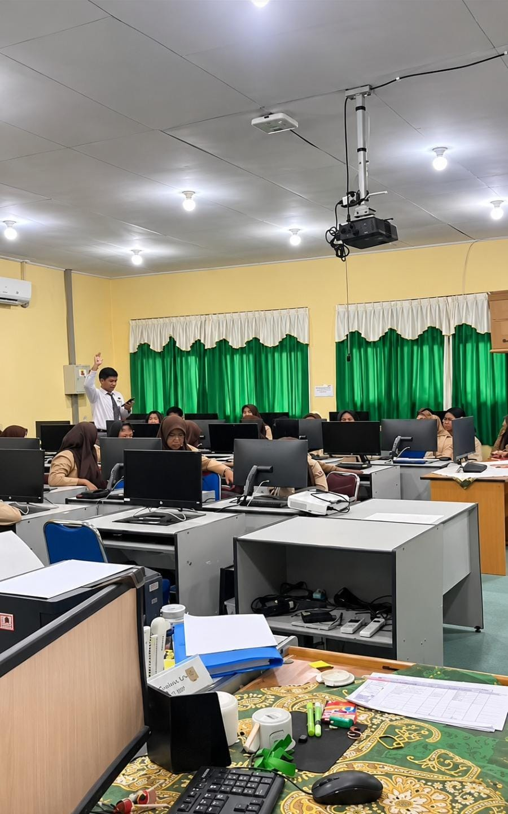
Belajar, mencoba, berkembang.Dokumentasi pembelajaran Jurusan Pemasaran
1964Tahun sekolah berdiri
2Konsentrasi keahlian
10Guru jurusan
5Prestasi
Sejarah Jurusan Pemasaran
SMK Negeri 2 Balikpapan telah berdiri sejak tahun 1964. Seiring perkembangan dunia usaha dan industri, program keahlian bisnis dan manajemen terus menyesuaikan diri; dalam perjalanannya program ini dikenal sebagai Bisnis Daring dan Pemasaran (BDP). Pembelajaran berkembang mengikuti kebutuhan industri dan kemajuan teknologi—mencakup pemasaran, promosi, analisis pasar, hingga digital marketing. Kini, Jurusan Pemasaran memiliki konsentrasi Bisnis Digital dan Bisnis Ritel untuk mempersiapkan lulusan yang kompeten dan siap menghadapi dunia kerja.
Siswa mengikuti proses pemilihan konsentrasi melalui mata pelajaran pilihan.
Penentuan konsentrasi mengikuti pilihan siswa, hasil penilaian akademik, dan ketentuan sekolah.
Dua konsentrasi keahlian
Temukan bidang yang ingin kamu dalami.
Dasar pemasaran menjadi bekal untuk memilih jalur pembelajaran yang paling sesuai saat memasuki kelas 11.
01 · Terhubung dengan masa depan
Bisnis Digital
Berfokus pada pemanfaatan teknologi digital dalam kegiatan bisnis: pemasaran melalui media sosial, bisnis online, digital marketing, digital branding, dan strategi promosi di era digital.
02 · Pengalaman ritel menyeluruh
Bisnis Ritel
Berfokus pada penjualan barang kepada konsumen: pengelolaan toko, penataan produk, pelayanan pelanggan, administrasi transaksi, dan persediaan barang.
Tujuan Pembelajaran
Jurusan Pemasaran bertujuan membentuk lulusan yang memiliki kompetensi dalam bidang pemasaran dan bisnis, mampu berkomunikasi dengan baik, memberikan pelayanan secara profesional, memanfaatkan teknologi digital, serta mengembangkan kreativitas dan jiwa kewirausahaan. Dengan bekal pengetahuan dan keterampilan tersebut, lulusan diharapkan mampu beradaptasi dengan kebutuhan dunia kerja maupun mengembangkan usaha secara mandiri.
Identitas jurusanBelajar hari ini.
Belajar hari ini.
Siap berniaga esok.
Logo Jurusan Pemasaran SMK Negeri 2 Balikpapan mencerminkan semangat membentuk generasi berpengetahuan, kreatif, inovatif, dan kompeten dalam bidang pemasaran.
Perpaduan elemen buku, gedung, bola dunia, dan keranjang belanja menggambarkan hubungan pendidikan dengan dunia usaha dan industri, serta kesiapan peserta didik menghadapi perkembangan bisnis, perdagangan, dan teknologi.
Buku · PengetahuanGedung · PendidikanBola dunia · JangkauanKeranjang · Perdagangan
Pendidik jurusan
Guru yang mendampingi setiap langkah.
Sepuluh guru Jurusan Pemasaran mendampingi proses belajar dan pengembangan kompetensi siswa.
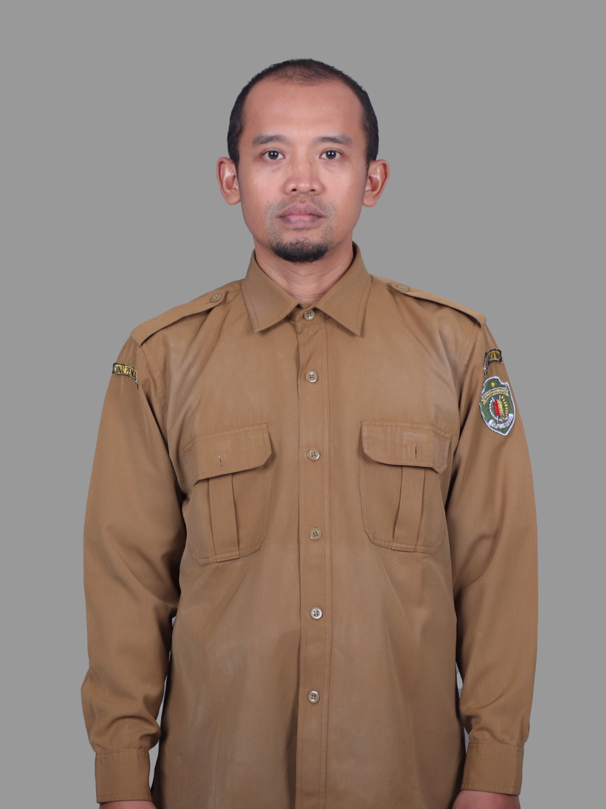
KEPALA PROGRAM
Andy Leta Setyawan
S.Pd
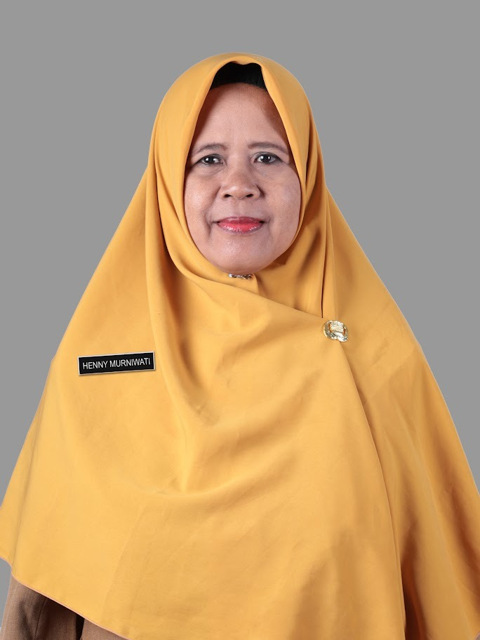
Henny Murniwati
S.Pd
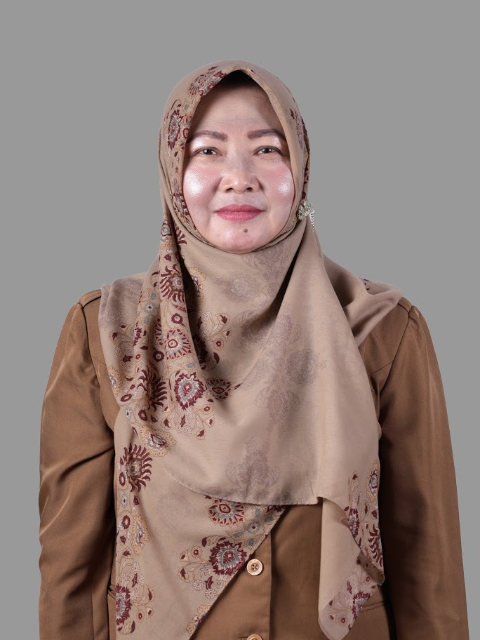
Hj. Anita Rusmawarni
S.Pd, MM
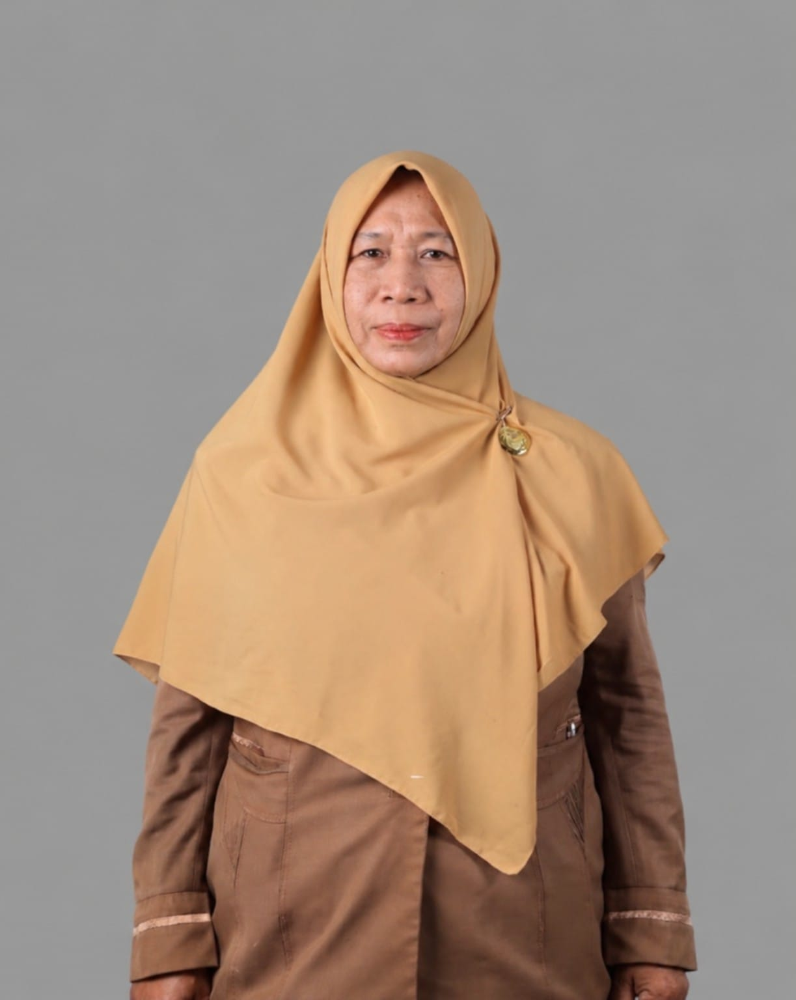
Suhatmini
S.Pd
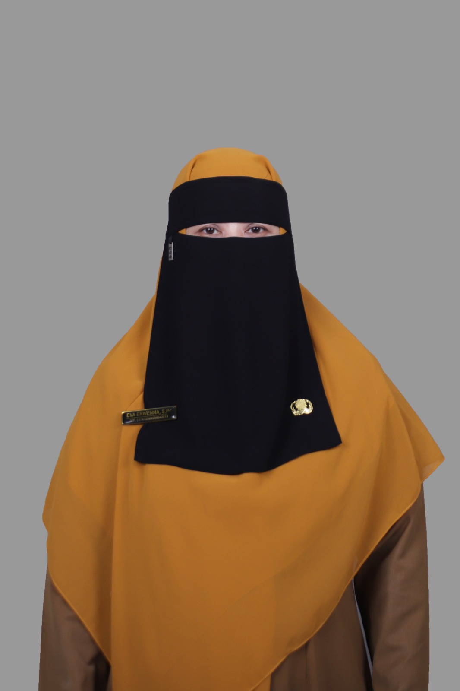
Eva Erwenna
S.Pd, MM
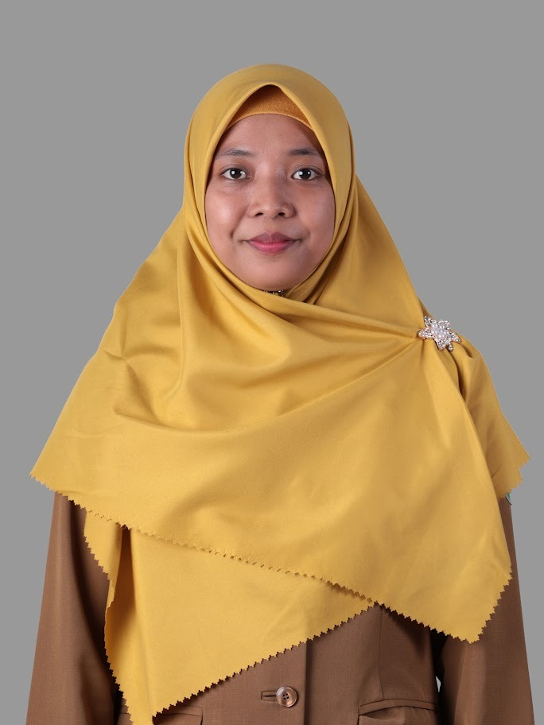
Ani Astuti
S.Pd
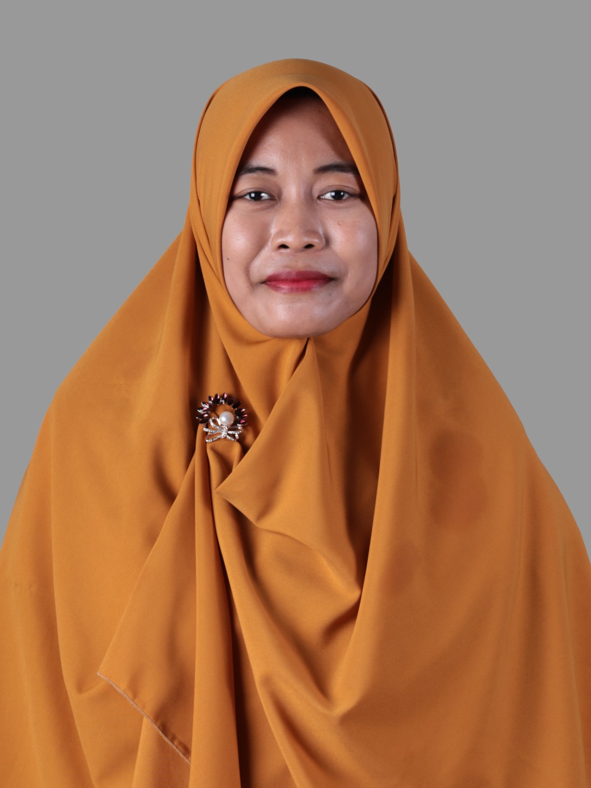
Yayuk Nurdianingsih
S.Pd
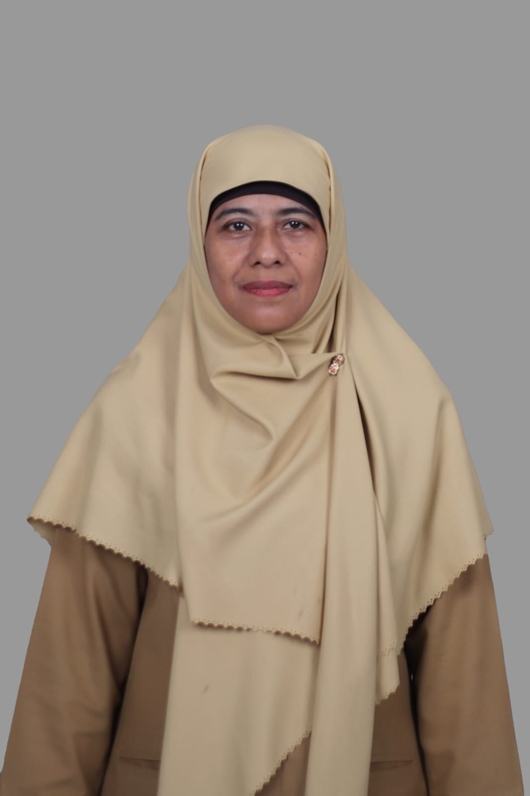
Siti Akbarya
S.Pd
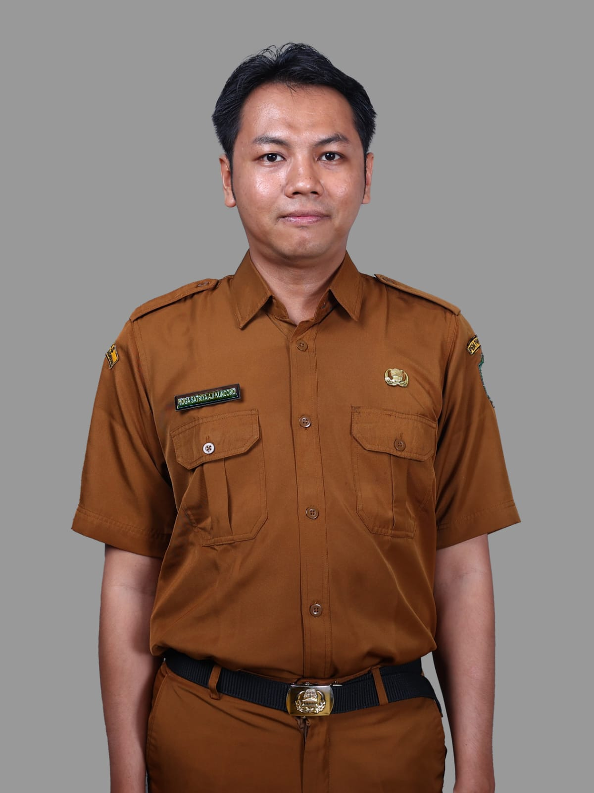
Yoga Satriya Aji Kuncoro
S.E
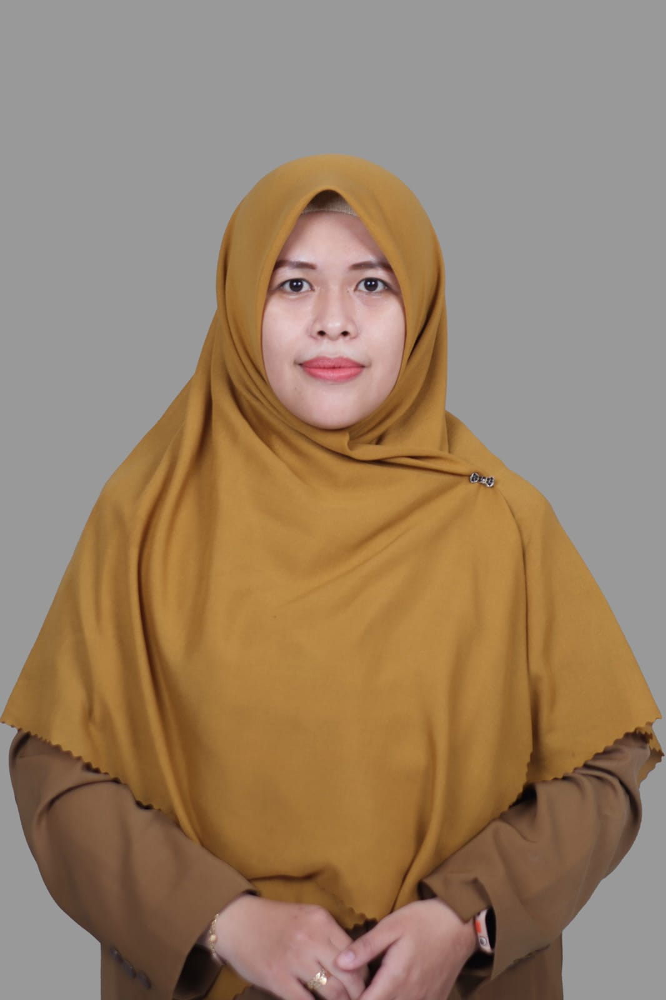
Zulfiana Bokhari
S.Pd
Identitas siswa
Seragam resmi jurusan.
Seragam Pemasaran SMK Negeri 2 Balikpapan, ditampilkan sesuai desain yang diberikan.
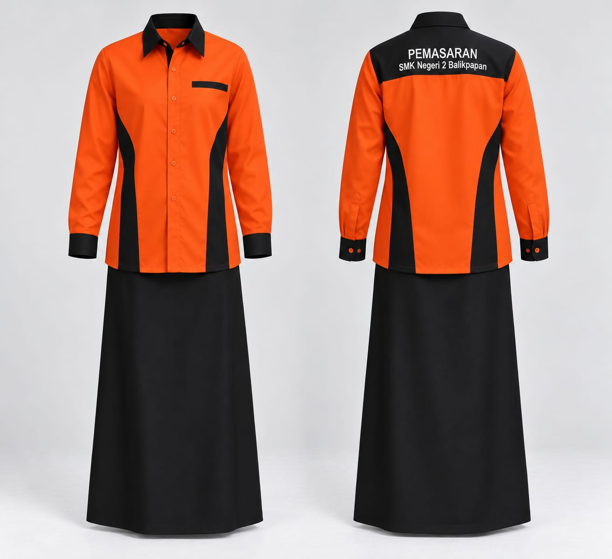
Seragam jurusan
01Model siswi
Tampilan depan dan belakang.
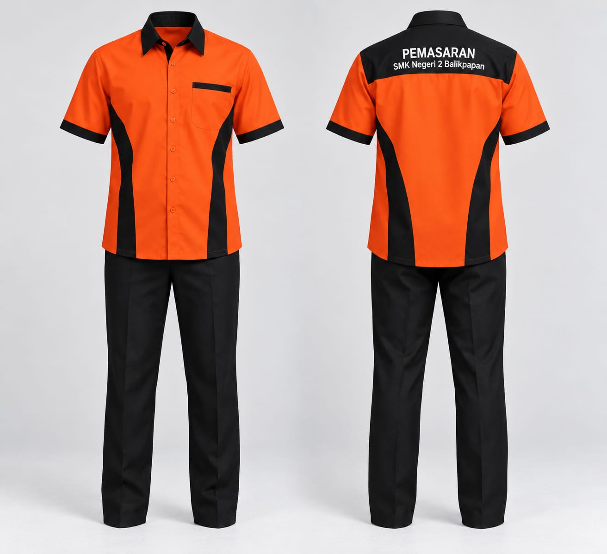
Seragam jurusan
02Model siswa
Tampilan depan dan belakang.
Cerita dalam gambar
Suasana belajar dan kebersamaan.
Dokumentasi kegiatan pembelajaran Jurusan Pemasaran. Pilih foto untuk melihat tampilan lebih besar.
Kurikulum kejuruan
Belajar dari dasar, lalu mendalami.
Pada kelas 10 siswa mengenal konsep pemasaran, kebutuhan dan perilaku konsumen, profil profesional melalui LinkedIn, serta perkembangan teknologi dan isu terkini dalam pemasaran. Setelah menyelesaikan pembelajaran dasar, siswa kelas 11 mendalami Bisnis Ritel atau Bisnis Digital sesuai proses pemilihan konsentrasi.
10
Pembelajaran Dasar Kelas 10
Mengenal konsep pemasaran, memahami kebutuhan dan perilaku konsumen, membangun profil profesional melalui LinkedIn, serta mengenal perkembangan teknologi dan isu terkini dalam dunia pemasaran. Bekal awal sebelum mendalami konsentrasi keahlian di kelas 11.
Bisnis Ritel
Pembelajaran spesifik untuk pengelolaan ritel dan layanan pelanggan.
- MarketingMempelajari strategi pemasaran, kebutuhan konsumen, pemahaman pasar, serta teknik promosi untuk meningkatkan penjualan produk.
- Komunikasi BisnisBerkomunikasi efektif dan profesional dalam pelayanan pelanggan, penyampaian informasi, presentasi, dan interaksi dengan rekan bisnis.
- Pengelolaan Bisnis RitelMengelola usaha ritel: penataan produk, persediaan barang, pelayanan konsumen, hingga proses transaksi penjualan.
Bisnis Digital
Pembelajaran spesifik untuk pemasaran, branding, dan komunikasi visual.
- MarketingStrategi pemasaran, analisis kebutuhan konsumen, pengenalan pasar, dan teknik promosi untuk memperkenalkan produk.
- Digital Branding / PerbisMembangun identitas dan citra merek melalui platform digital, mengembangkan strategi branding, dan memanfaatkan media digital untuk bisnis.
Prestasi dan keunggulan
Kompetensi yang berbuah pencapaian.
Prestasi siswa, kegiatan praktik bisnis, dan dukungan pembelajaran yang tercatat di Jurusan Pemasaran.
LKS Digital Marketing
Tingkat Kota Balikpapan
Eiffel Garren Christofel meraih Juara II berkat kemampuan merancang kampanye pemasaran digital yang dinamis. Husnul Khotimah meraih Juara III melalui pendekatan konten pemasaran digital yang kreatif dengan segmentasi pasar yang presisi.
Juara II & III
LKS Digital Marketing
Tingkat Provinsi Kalimantan Timur
Nurul meraih Juara II di bidang Digital Marketing dengan strategi pemasaran digital yang matang dan profesional.
Juara II Provinsi
LKS Digital Marketing
Tingkat Kota dan Nasional
Eiffel Garren Christofel kembali meraih Juara I Digital Marketing pada LKS Tingkat Kota Balikpapan dan terpilih mewakili sekolah untuk melaju ke ajang LKS Tingkat Nasional.
Juara I · Wakil sekolah
Nilai Ujian Sekolah Terbaik
Salmah Arif, alumni Bisnis Daring dan Pemasaran (BDP), meraih predikat Nilai Ujian Sekolah Terbaik dengan nilai akhir 95,50.
Nilai 95,50
Lulusan berprestasi dan kontribusi
Putri Aisyah (XII BDP 1) dan Giovani (XII BDP 2) memperoleh penghargaan khusus dari sekolah atas prestasi nonakademik dan kontribusinya.
Ekosistem praktikBelajar di kelas.
Belajar di kelas.
Mencoba di dunia nyata.
Keunggulan jurusan hadir lewat praktik, kolaborasi, dan kegiatan yang mendekatkan siswa dengan dunia usaha.
Status BLUD
SMKN 2 Balikpapan berstatus Badan Layanan Umum Daerah. Status ini mendukung pengelolaan unit komersial dan produk siswa, termasuk praktik pemasaran dan layanan digital secara profesional.
Teaching Factory (TEFA)
Jurusan Pemasaran/Bisnis Digital didukung fasilitas dan alat produksi berstandar industri bernilai miliaran rupiah dari pemerintah. Fasilitas ini menjadi tempat studi tiru bagi berbagai SMK di Kalimantan Timur, seperti dari Samarinda dan Surakarta.
Smart Biztefa
Siswa ikut mengelola operasional bisnis riil: pelayanan pelanggan, manajemen produk, dan promosi daring lewat media sosial sekolah bersama siswa DKV dan Akuntansi.
Kompetisi dan kreativitas
Siswa terlibat dalam perluasan branding sekolah, peluncuran buku kreatif “Aksara Skada”, kemitraan penyiaran digital bersama media lokal, serta kompetisi debat kedinasan dan universitas setempat.
Prospek lulusan
Beragam jalan di dunia usaha.
Lulusan memiliki peluang bekerja di berbagai bidang, baik dalam bisnis ritel maupun bisnis digital.
Berbekal keterampilan pemasaran, pelayanan pelanggan, administrasi, dan pengelolaan bisnis, lulusan diharapkan mampu beradaptasi dengan kebutuhan dunia usaha dan dunia industri.
Pramuniaga Profesional
Melayani pelanggan, memberi informasi produk, membantu pembeli, dan menjaga area penjualan.
Kasir Bisnis Ritel
Melayani pembayaran, mengoperasikan mesin kasir, dan mencatat transaksi dengan tepat.
Administrasi & Gudang
Mengelola data, mencatat barang masuk dan keluar, memeriksa persediaan, membantu operasional.
Tenaga Pemasaran
Mempromosikan produk atau jasa, menawarkan produk, dan membantu meningkatkan penjualan.
Wirausahawan Ritel & Digital
Membangun usaha melalui toko fisik atau platform digital dengan strategi pemasaran dan bisnis.
Pemasaran Media Sosial
Mendukung promosi media sosial, membuat materi pemasaran, memperkenalkan merek.
Administrasi Penjualan & Pembelian
Mencatat transaksi, mengelola dokumen, dan memastikan administrasi bisnis tersusun baik.
Perantara Dagang
Menghubungkan penjual dengan pembeli untuk membantu proses perdagangan dan transaksi.
Siap menghadapi dunia kerja.
Melalui konsentrasi Bisnis Digital dan Bisnis Ritel, siswa dibekali komunikasi bisnis, pemasaran digital, penataan produk, pengelolaan ritel, dan administrasi transaksi—bekal untuk memasuki dunia kerja maupun mengembangkan usaha secara mandiri.
Profil pembuat
Dikembangkan oleh tim XI-RPL.
Tim pengembang website Jurusan Pemasaran SMK Negeri 2 Balikpapan.
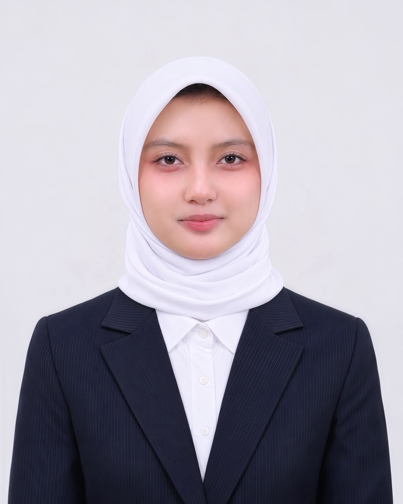
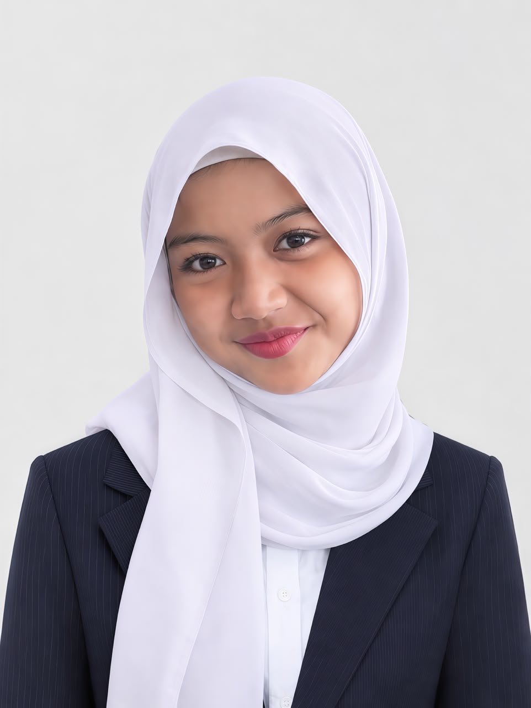